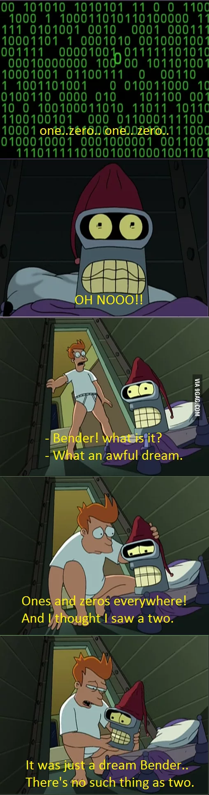

Выпуск подкаста с моим участием по теме троичной логики и троичных компьютеров

Пару недель назад я принял участие в подкасте "Опытные на кухне". Я просто оставлю тут ссылку на выпуск.
О троичной логике и троичных компьютерах

Не так давно я снова принял участие в подкасте "Опытные на кухне". Меня попросили выступить с докладом о компьютерах, работающих на базе троичной логики. Я конечно, и раньше слышал об их существовании, но информации о них достаточно немного, особенно если сравнивать с привычными нам компьютерами, которые оперируют нулями и единицами. И на то есть весомые причины. Троичные компьютеры - это крайне специфичные машины, которые в силу ряда причин широкого распространения не получили и, скорее всего, уже не получат. Далее я приведу материал, который изложил в подкасте. Когда он выйдет, я добавлю ссылку на сам выпуск. В материале изложена моя точка зрения на следующие вопросы: почему сейчас намного сложнее построить троичный компьютер, чем 50 лет назад, в чём его преимущества и недостатки по сравнению с двоичиным. А так же рассказано о тех экземплярах, которые когда-то всё-таки были созданы.